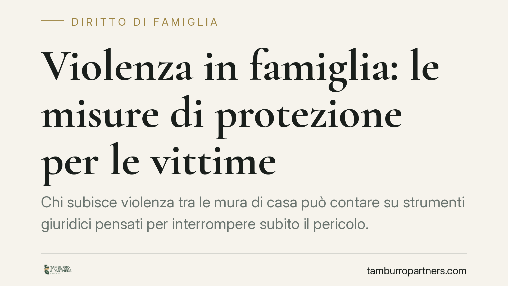

Violenza in famiglia: le misure di protezione per le vittime
Chi subisce violenza tra le mura di casa può contare su strumenti giuridici pensati per interrompere subito il pericolo. Allontanamento dell'aggressore, divieto di avvicinamento, controllo elettronico e sostegno economico sono misure attivabili in tempi rapidi. Vediamo come funzionano e quali passi compiere per ottenerle.

Il quadro del problema
La violenza domestica non si esaurisce nell'aggressione fisica. Comprende minacce, condotte persecutorie, coercizione economica e pressioni psicologiche che, spesso, precedono e accompagnano gli episodi più gravi.
L'ordinamento non chiede alla vittima di allontanarsi da casa propria. Al contrario, sposta l'onere sull'autore delle condotte, che può essere obbligato a lasciare l'abitazione familiare e a mantenere una distanza fisica dalla persona offesa.
Inquadramento normativo
Lo strumento cardine è l'allontanamento dalla casa familiare previsto dall'art. 282-bis del codice di procedura penale. Il giudice può imporre all'indagato di lasciare immediatamente l'abitazione e di non farvi rientro senza autorizzazione. Alla misura può aggiungersi il divieto di avvicinamento a luoghi determinati (casa, lavoro, scuola dei figli) e alla persona offesa.
La stessa norma consente al giudice di disporre, se necessario per garantire la vita dignitosa della vittima e dei figli, il versamento periodico di un assegno a favore delle persone conviventi rimaste prive di mezzi. È una misura poco conosciuta ma rilevante: la protezione fisica non deve tradursi in un tracollo economico.
Per rendere effettivo il divieto di avvicinamento interviene l'art. 275-bis c.p.p., che prevede l'uso del braccialetto elettronico e di analoghi dispositivi di controllo a distanza. Quando la persona offesa ne accetta l'installazione, il sistema segnala in tempo reale l'avvicinamento dell'aggressore, consentendo un intervento tempestivo.
Infine, l'art. 387-bis del codice penale punisce la violazione dei provvedimenti di allontanamento e del divieto di avvicinamento. Chi trasgredisce commette un reato autonomo, con possibile aggravamento della propria posizione cautelare.
Cosa cambia per chi subisce violenza
Le misure descritte hanno una funzione di protezione immediata, non di condanna. Possono essere disposte già nella fase delle indagini, prima di qualsiasi processo, proprio perché il pericolo va neutralizzato subito.
Dal punto di vista pratico, questo significa che la vittima può continuare a vivere nella propria abitazione, mantenere la routine dei figli e ricevere, ove disposto, un contributo economico. Il controllo elettronico riduce il rischio di violazioni silenziose, perché ogni avvicinamento lascia traccia.
È importante sapere che la richiesta di protezione non pregiudica gli altri procedimenti. Le misure penali coesistono con le tutele civili in materia di separazione, affidamento dei figli e assegnazione della casa. I due binari possono procedere in parallelo.
Un punto merita attenzione: le misure non sono automatiche. Il giudice le adotta sulla base di elementi concreti. Per questo la documentazione degli episodi – referti medici, denunce precedenti, messaggi, testimonianze – incide in modo decisivo sulla rapidità e sulla solidità del provvedimento.
Cosa fare in concreto
- Metti in sicurezza la documentazione. Conserva referti, screenshot di messaggi, registrazioni ammissibili e nomi di eventuali testimoni: sono la base su cui il giudice decide.
- Presenta denuncia o querela senza rinviare. Molte misure si attivano proprio a partire da un procedimento penale già avviato.
- Chiedi espressamente le misure di protezione. L'allontanamento, il divieto di avvicinamento e l'eventuale assegno vanno sollecitati: indica al difensore e all'autorità le esigenze concrete tue e dei figli.
- Valuta il braccialetto elettronico. Se ti viene proposto, informati sul funzionamento e sul consenso richiesto: può rafforzare in modo sensibile la tua sicurezza.
- Segnala subito ogni violazione. Se l'aggressore viola il provvedimento, documentalo e denuncialo: la trasgressione è un reato che può aggravare la sua posizione.
Consigliamo di affrontare questi passaggi con un supporto legale fin dall'inizio, così da coordinare tutela penale e profili civili in modo coerente. Ricordiamo inoltre l'esistenza dei centri antiviolenza e del numero pubblico 1522, attivi gratuitamente per orientamento e sostegno.
La protezione della vittima è una priorità dell'ordinamento. Conoscere gli strumenti disponibili è il primo passo per usarli nel momento in cui servono.
---
*Contributo informativo a cura di Tamburro & Partners - Avv. Giuseppe Tamburro. Non costituisce parere legale.*
Ogni famiglia ha il suo equilibrio.
Separazione, divorzio, affidamento, assegno: se vuoi un confronto riservato su una specifica situazione, scrivi allo studio. Ti rispondiamo entro un giorno lavorativo.